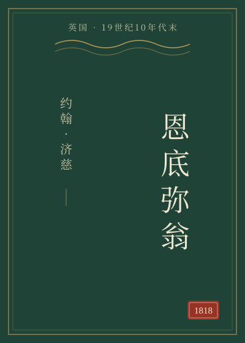
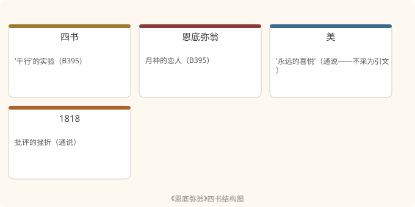

恩底弥翁
一、基本信息
| 作者 | 约翰·济慈 |
|---|---|
| 成书/出版 | 1818年（Britannica B395：Endymion (1818)——四个1000行部分） John Keats — Encyclopaedia Britannica（百科全书） |
| 国别/地区 | 英国 |
| 时代 | 近代 · 19世纪10年代末 |
| 体裁 | 长诗 |
| 语言 | 英语 |

《恩底弥翁》四书结构图（主题·结构图）
二、创作背景
Britannica（B395）：Endymion——1818——'four 1,000-line sections'（四个1000行部分）。
Britannica（B395）：济慈——1819年颂歌年（交叉）。
题材（通说待核）：恩底弥翁与月神——'一件美的事物是永远的喜悦'（首行——不采为引文）。
三、内容脉络
（通说待核）四书结构：皮尼亚—海底—宙斯—赫利俄斯？（四书名通说待核）。
（通说待核）月神塞勒涅与牧羊人恩底弥翁。
四、主要人物表
| 人物 | 身份 | 说明 |
|---|---|---|
| 恩底弥翁 | 牧羊人 | （B395 书名人物） |
| 塞勒涅/辛西娅 | 月神 | （通说待核） |
五、主题与艺术特点
- '美'的追寻（首行语境——通说待核）。
- 四书的'千行'实验（B395）。
- 神话的浪漫化（通说待核）。
六、影响与评论
- Britannica：'four 1,000-line sections'（B395）。
John Keats — Encyclopaedia Britannica（百科全书） - Britannica：1819颂歌年的前奏（B395 交叉）。
John Keats — Encyclopaedia Britannica（百科全书）
七、阅读建议
难点
- 四书的迂回叙事。
- '首行'名句核对（不采为引文）。
- 《恩底弥翁》中译本（人民文学等——通说待核）。
- 英文原版（公有领域）。
济慈长诗；与《1819年颂歌》对读。
八、待核实
- 四书名核对（通说）。
- 1818年出版细节待核。
- '首行'名句核对（不采为引文）。